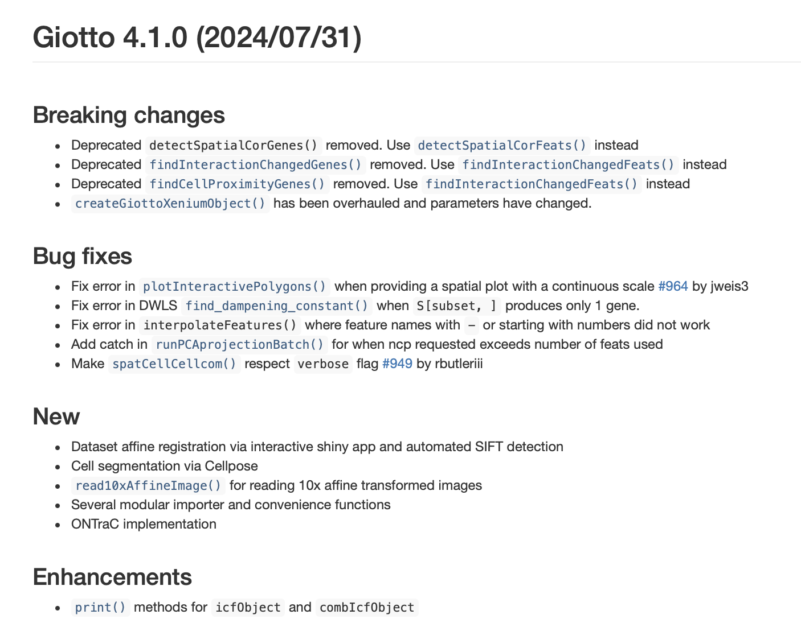

4 Creando la infraestructura de un paquete
Joselyn Cristina Chávez Fuentes
29 de octubre de 2024
4.2 Los primeros pasos
- Revisar si podemos usar el nombre del paquete
- Crear la estructura inicial del paquete
- Podemos agregar la estructura de biocthis
- Pedir que Git ignore el archivo .Rproj
- Crear el respositorio de GitHub
- Crear el archivo Description estilo Bioconductor
- Crear el archivo README estilo Bioconductor
Recuerda guardar los cambios, hacer commit y push.
- Crear el archivo NEWS estilo Bioconductor
- Crear los archivos de ayuda para usuarios y contribuidores
4.3 Checks
4.3.1 BiocCheck
Algunas reglas de BiocCheck:
- Utilizar el símbolo <- en lugar de = para definir funciones y variables.
- Utilizar TRUE y FALSE en lugar de T y F.
- Indentar el código usando 4 espacios.
- Las líneas de código y documentación no deben ser mayores a 80 caracteres.
- Las funciones deben tener 50 líneas de código o menos.
- El paquete debe contener al menos una viñeta.
- Al menos 80% de las funciones deben tener ejemplos reproducibles.
- Las dependencias deben ser declaradas en el archivo DESCRIPTION.
- El paquete debe tener al menos un biocView.
- El tamaño del paquete no debe ser mayor 5Mb.
- El maintainer debe estar suscrito a la lista de correo de Bioconductor.
- El maintainer debe agregar su paquete en los tags de Bioconductor.
4.4 Modificando el archivo DESCRIPTION
- Paquete
Este es el nombre del paquete. El nombre del repositorio y el nombre del paquete en la descripción deben coincidir (incluyendo mayúsculas y minúsculas).
- Título
Este es un título breve pero descriptivo para el paquete.
- Versión
Todos los paquetes de Bioconductor utilizan un esquema de versión x.y.z. Cuando se envía por primera vez a Bioconductor, un paquete debe tener la versión 0.99.0.
Se aplican las siguientes reglas:
- x es normalmente 0 para paquetes que aún no han sido liberados.
- y es par para paquetes liberados, e impar para paquetes en desarrollo. Generalmente, no se debe aumentar este número en el pre-release.
- z se incrementa siempre que se realizan cambios en el paquete.
Descripción
La descripción debe ser una visión general relativamente breve pero detallada de lo que implica la funcionalidad del paquete. Debe ser de al menos tres oraciones completas.
- Autores
Se requiere una designación de maintainer (cre) con una dirección de correo electrónico que se mantenga activamente. Esta dirección de correo se utilizará para el contacto con respecto a cualquier problema que surja con el paquete en el futuro.
Idealmente, se debe incluir el ORCiD por lo menos del maintainer.
person("Lori", "Shepherd",
email = Lori.Shepherd@roswellpark.org,
role = c("cre", "aut"),
comment = c(ORCID = "0000-0002-5910-4010"))Sólo debe figurar una persona como responsable para garantizar un único punto de contacto. Esta persona tendrá acceso al repositorio git en git.bioconductor.org. El acceso a Commit puede ser dado a otros desarrolladores por solicitud en la lista de correo bioc-devel.
Otra opción es añadir colaboradores al repositorio de GitHub. Este enfoque permite el desarrollo por muchos pero restringe el acceso a git.bioconductor.org.
- Licencia
El campo de licencia debe referirse preferentemente a una licencia estándar no restrictiva.
Las licencias que restringen el uso, por ejemplo, a investigadores académicos o sin fines de lucro, no son adecuadas para Bioconductor. Los paquetes de bioconductor básico suelen estar licenciados bajo Artistic-2.0.
El paquete debe contener sólo código que pueda ser redistribuido de acuerdo con la licencia del paquete.
- LazyData
Para paquetes que incluyen datos, se recomienda NO incluir LazyData: TRUE. Incluirlo en ese caso, ralentiza la carga de paquetes con datos grandes.
- Dependencias
Todos los paquetes deben estar disponibles a través de biocViews o CRAN de Bioconductor; el uso del campo Remotes: no es soportado, por lo tanto las dependencias sólo disponibles en otros repositorios (e.g. GitHub) no están permitidas.
Un paquete puede ser listado sólo una vez entre Depends, Imports, Suggests, o Enhances:
- Imports: es para paquetes que proporcionan funciones, métodos o clases que se usan dentro del código del paquete. La mayoría de los paquetes están listados aquí.
- Depends: es para paquetes que proporcionan funcionalidad esencial para los usuarios del paquete, por ejemplo, el paquete GenomicRanges se enumera en el campo Depends: de GenomicAlignments. Es poco común que más de tres paquetes aparezcan como Depends:.
- Suggests: es para paquetes usados en viñetas, ejemplos y código condicional. Comúnmente, los paquetes de anotaciones y experimentos (por ejemplo, TxDb*) usados en viñetas y código de ejemplo se incluyen en este campo, evitando así una descarga costosa.
- Enhances: es para paquetes como parallel que mejoran el rendimiento del paquete, pero no son estrictamente necesarios para su funcionalidad.
En el caso de que se requiera una función única externa para el código del paquete, la disponibilidad y el uso del paquete pueden hacerse a través de:
if (!requireNamespace('suggPKG', quietly = TRUE))
stop("Install 'suggPKG' to use this function.")
suggPKG::function()- biocViews
Este campo es obligatorio!
Especifica al menos dos biocViews. Los términos deben provenir del mismo tipo de paquete (Software, AnnotationData, ExperimentData o Workflow).
Puedes encontrar más información en: https://www.bioconductor.org/packages/release/BiocViews.html
- BugReports
Se recomienda apuntar hacia el repositorio de GitHub, por ejemplo: https://github.com/usuario/paquete/issues.
- URL
Se incluyen los links importantes, como el repositorio con el código fuente y el sitio web de pkgdown si se cuenta con él. Por ejemplo: https://github.com/usuario/paquete https://usuario.github.io/paquete
4.5 Modificando el archivo NEWS
Secciones:
- New: Nuevas funciones.
- Bug fixes: Reparación de errores en las funciones previas o en la documentación.
- Changes: Cambios en el código de las funciones, incluyendo modificaciones en los argumentos.
- Breaking changes: Cambios importantes que romperían el código en caso de no ser atendidos, por ejemplo el uso de funciones o argumentos antiguos.
- Enhancements: Mejoras a las funciones existentes.
Formato
El archivo NEWS se ve similar a este ejemplo:
